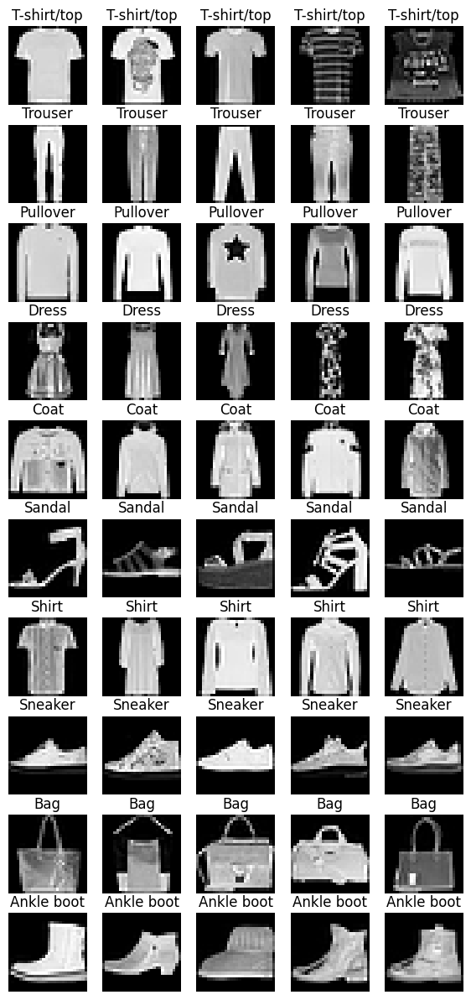

Session 5: Optimization#
You need to read the theory lectures before practicing with this notebook:
MNIST Fashion#
import numpy as np
import matplotlib.pyplot as plt
import tensorflow as tf
import os
import random
def reset_random_seeds(CUR_SEED=42):
os.environ['PYTHONHASHSEED']=str(CUR_SEED)
tf.random.set_seed(CUR_SEED)
np.random.seed(CUR_SEED)
random.seed(CUR_SEED)
reset_random_seeds()
(x_train, y_train), (x_test, y_test) = tf.keras.datasets.fashion_mnist.load_data()
print('Shape of x_train:',x_train.shape)
print('Shape of y_train:',y_train.shape)
print('-'*10)
print('Shape of x_test:',x_test.shape)
print('Shape of y_test:',y_test.shape)
print('-'*10)
print('Labels:',np.unique(y_train))
Downloading data from https://storage.googleapis.com/tensorflow/tf-keras-datasets/train-labels-idx1-ubyte.gz
29515/29515 [==============================] - 0s 0us/step
Downloading data from https://storage.googleapis.com/tensorflow/tf-keras-datasets/train-images-idx3-ubyte.gz
26421880/26421880 [==============================] - 0s 0us/step
Downloading data from https://storage.googleapis.com/tensorflow/tf-keras-datasets/t10k-labels-idx1-ubyte.gz
5148/5148 [==============================] - 0s 0us/step
Downloading data from https://storage.googleapis.com/tensorflow/tf-keras-datasets/t10k-images-idx3-ubyte.gz
4422102/4422102 [==============================] - 0s 0us/step
Shape of x_train: (60000, 28, 28)
Shape of y_train: (60000,)
----------
Shape of x_test: (10000, 28, 28)
Shape of y_test: (10000,)
----------
Labels: [0 1 2 3 4 5 6 7 8 9]
labels = ['T-shirt/top', 'Trouser', 'Pullover', 'Dress', 'Coat',
'Sandal', 'Shirt', 'Sneaker', 'Bag', 'Ankle boot']
rows = 10
cols = 5
_, axs = plt.subplots(nrows=rows,ncols=cols, figsize=(7,15))
for row in range(rows):
for col in range(cols):
random_index = np.random.choice(np.where(y_train == row)[0])
axs[row][col].grid('off')
axs[row][col].axis('off')
axs[row][col].imshow(x_train[random_index], cmap='gray')
axs[row][col].set_title(labels[y_train[random_index]])

x_train = x_train / 255.0
x_test = x_test / 255.0
y_train_encode = tf.keras.utils.to_categorical(y_train, num_classes=10)
y_test_encode = tf.keras.utils.to_categorical(y_test, num_classes=10)
SGD vs Adam vs AdamW#
from tensorflow.keras.models import Sequential
from tensorflow.keras.layers import Dense, BatchNormalization, Dropout, Activation, Input, Flatten
from tensorflow.keras.regularizers import l2
from tensorflow.keras.optimizers import SGD, Adam, AdamW
from tensorflow.keras.callbacks import EarlyStopping, LearningRateScheduler
import math
import plotly.express as px
import plotly.graph_objects as go
def plot(history, chart_title):
epochs = np.arange(len(history.history["loss"]))
train_loss = px.line(x=epochs, y=history.history["loss"]).data[0]
train_loss["name"] = "Train Loss"
train_loss["showlegend"] = True
val_loss = px.line(x=epochs, y=history.history["val_loss"]).data[0]
val_loss["line"]["color"] = "#00ff00"
val_loss["name"] = "Val Loss"
val_loss["showlegend"] = True
train_accuracy = px.line(x=epochs, y=history.history["accuracy"]).data[0]
train_accuracy["line"]["dash"] = "dot"
train_accuracy["name"] = "Train Accuracy"
train_accuracy["showlegend"] = True
val_accuracy = px.line(x=epochs, y=history.history["val_accuracy"]).data[0]
val_accuracy["line"]["color"] = "#00ff00"
val_accuracy["line"]["dash"] = "dot"
val_accuracy["name"] = "Val Accuracy"
val_accuracy["showlegend"] = True
fig = go.Figure(data=[train_loss, val_loss, train_accuracy, val_accuracy])
fig.update_layout(
title = chart_title,
xaxis_title = "Epoch",
yaxis_title = "Value"
)
fig.show()
def train_model(optimizer):
tf.keras.backend.clear_session()
reset_random_seeds()
model = Sequential()
model.add(Flatten(input_shape=(28,28)))
model.add(Dense(512, activation="relu", kernel_initializer="he_normal"))
model.add(Dense(512, activation="relu", kernel_initializer="he_normal"))
model.add(Dense(10, activation="softmax"))
model.compile(optimizer=optimizer, loss='categorical_crossentropy', metrics='accuracy')
history = model.fit(x_train, y_train_encode, batch_size=256, epochs=30, validation_data=(x_test, y_test_encode))
return history
sgd_history = train_model(SGD())
plot(sgd_history, chart_title="SGD: Loss vs Accuracy")
Epoch 1/30
235/235 [==============================] - 8s 8ms/step - loss: 1.0971 - accuracy: 0.6600 - val_loss: 0.7683 - val_accuracy: 0.7489
Epoch 2/30
235/235 [==============================] - 2s 7ms/step - loss: 0.6783 - accuracy: 0.7828 - val_loss: 0.6418 - val_accuracy: 0.7930
Epoch 3/30
235/235 [==============================] - 1s 6ms/step - loss: 0.5895 - accuracy: 0.8085 - val_loss: 0.5884 - val_accuracy: 0.8031
Epoch 4/30
235/235 [==============================] - 2s 7ms/step - loss: 0.5428 - accuracy: 0.8214 - val_loss: 0.5602 - val_accuracy: 0.8060
Epoch 5/30
235/235 [==============================] - 2s 8ms/step - loss: 0.5134 - accuracy: 0.8290 - val_loss: 0.5359 - val_accuracy: 0.8162
Epoch 6/30
235/235 [==============================] - 2s 7ms/step - loss: 0.4927 - accuracy: 0.8336 - val_loss: 0.5209 - val_accuracy: 0.8176
Epoch 7/30
235/235 [==============================] - 2s 7ms/step - loss: 0.4768 - accuracy: 0.8390 - val_loss: 0.5183 - val_accuracy: 0.8168
Epoch 8/30
235/235 [==============================] - 1s 4ms/step - loss: 0.4635 - accuracy: 0.8414 - val_loss: 0.4871 - val_accuracy: 0.8321
Epoch 9/30
235/235 [==============================] - 1s 4ms/step - loss: 0.4524 - accuracy: 0.8453 - val_loss: 0.4857 - val_accuracy: 0.8302
Epoch 10/30
235/235 [==============================] - 1s 4ms/step - loss: 0.4435 - accuracy: 0.8489 - val_loss: 0.4799 - val_accuracy: 0.8326
Epoch 11/30
235/235 [==============================] - 1s 4ms/step - loss: 0.4365 - accuracy: 0.8496 - val_loss: 0.4633 - val_accuracy: 0.8388
Epoch 12/30
235/235 [==============================] - 1s 4ms/step - loss: 0.4288 - accuracy: 0.8518 - val_loss: 0.4601 - val_accuracy: 0.8392
Epoch 13/30
235/235 [==============================] - 1s 4ms/step - loss: 0.4230 - accuracy: 0.8557 - val_loss: 0.4529 - val_accuracy: 0.8435
Epoch 14/30
235/235 [==============================] - 1s 5ms/step - loss: 0.4166 - accuracy: 0.8572 - val_loss: 0.4563 - val_accuracy: 0.8391
Epoch 15/30
235/235 [==============================] - 1s 5ms/step - loss: 0.4120 - accuracy: 0.8578 - val_loss: 0.4445 - val_accuracy: 0.8444
Epoch 16/30
235/235 [==============================] - 1s 5ms/step - loss: 0.4064 - accuracy: 0.8606 - val_loss: 0.4771 - val_accuracy: 0.8310
Epoch 17/30
235/235 [==============================] - 1s 4ms/step - loss: 0.4017 - accuracy: 0.8616 - val_loss: 0.4347 - val_accuracy: 0.8472
Epoch 18/30
235/235 [==============================] - 1s 4ms/step - loss: 0.3981 - accuracy: 0.8624 - val_loss: 0.4338 - val_accuracy: 0.8483
Epoch 19/30
235/235 [==============================] - 1s 4ms/step - loss: 0.3942 - accuracy: 0.8638 - val_loss: 0.4266 - val_accuracy: 0.8490
Epoch 20/30
235/235 [==============================] - 1s 4ms/step - loss: 0.3902 - accuracy: 0.8650 - val_loss: 0.4388 - val_accuracy: 0.8428
Epoch 21/30
235/235 [==============================] - 1s 4ms/step - loss: 0.3869 - accuracy: 0.8654 - val_loss: 0.4263 - val_accuracy: 0.8486
Epoch 22/30
235/235 [==============================] - 1s 4ms/step - loss: 0.3824 - accuracy: 0.8679 - val_loss: 0.4403 - val_accuracy: 0.8429
Epoch 23/30
235/235 [==============================] - 1s 4ms/step - loss: 0.3808 - accuracy: 0.8679 - val_loss: 0.4234 - val_accuracy: 0.8478
Epoch 24/30
235/235 [==============================] - 1s 4ms/step - loss: 0.3775 - accuracy: 0.8695 - val_loss: 0.4201 - val_accuracy: 0.8520
Epoch 25/30
235/235 [==============================] - 1s 4ms/step - loss: 0.3737 - accuracy: 0.8709 - val_loss: 0.4175 - val_accuracy: 0.8518
Epoch 26/30
235/235 [==============================] - 1s 5ms/step - loss: 0.3712 - accuracy: 0.8709 - val_loss: 0.4576 - val_accuracy: 0.8307
Epoch 27/30
235/235 [==============================] - 1s 6ms/step - loss: 0.3691 - accuracy: 0.8721 - val_loss: 0.4314 - val_accuracy: 0.8405
Epoch 28/30
235/235 [==============================] - 1s 5ms/step - loss: 0.3649 - accuracy: 0.8739 - val_loss: 0.4159 - val_accuracy: 0.8500
Epoch 29/30
235/235 [==============================] - 1s 4ms/step - loss: 0.3634 - accuracy: 0.8741 - val_loss: 0.4039 - val_accuracy: 0.8555
Epoch 30/30
235/235 [==============================] - 1s 4ms/step - loss: 0.3611 - accuracy: 0.8750 - val_loss: 0.4185 - val_accuracy: 0.8491
adam_history = train_model(Adam())
plot(adam_history, chart_title="Adam: Loss vs Accuracy")
Epoch 1/30
235/235 [==============================] - 3s 5ms/step - loss: 0.5012 - accuracy: 0.8256 - val_loss: 0.4252 - val_accuracy: 0.8469
Epoch 2/30
235/235 [==============================] - 1s 4ms/step - loss: 0.3556 - accuracy: 0.8710 - val_loss: 0.3724 - val_accuracy: 0.8643
Epoch 3/30
235/235 [==============================] - 1s 4ms/step - loss: 0.3141 - accuracy: 0.8853 - val_loss: 0.3499 - val_accuracy: 0.8727
Epoch 4/30
235/235 [==============================] - 1s 4ms/step - loss: 0.2920 - accuracy: 0.8910 - val_loss: 0.3573 - val_accuracy: 0.8687
Epoch 5/30
235/235 [==============================] - 1s 4ms/step - loss: 0.2699 - accuracy: 0.8989 - val_loss: 0.3400 - val_accuracy: 0.8744
Epoch 6/30
235/235 [==============================] - 1s 4ms/step - loss: 0.2551 - accuracy: 0.9045 - val_loss: 0.3337 - val_accuracy: 0.8781
Epoch 7/30
235/235 [==============================] - 1s 4ms/step - loss: 0.2394 - accuracy: 0.9113 - val_loss: 0.3405 - val_accuracy: 0.8798
Epoch 8/30
235/235 [==============================] - 1s 5ms/step - loss: 0.2293 - accuracy: 0.9142 - val_loss: 0.3369 - val_accuracy: 0.8854
Epoch 9/30
235/235 [==============================] - 1s 5ms/step - loss: 0.2191 - accuracy: 0.9169 - val_loss: 0.3226 - val_accuracy: 0.8886
Epoch 10/30
235/235 [==============================] - 1s 5ms/step - loss: 0.2088 - accuracy: 0.9217 - val_loss: 0.3294 - val_accuracy: 0.8837
Epoch 11/30
235/235 [==============================] - 1s 4ms/step - loss: 0.1985 - accuracy: 0.9257 - val_loss: 0.3397 - val_accuracy: 0.8880
Epoch 12/30
235/235 [==============================] - 1s 4ms/step - loss: 0.1872 - accuracy: 0.9292 - val_loss: 0.3356 - val_accuracy: 0.8894
Epoch 13/30
235/235 [==============================] - 1s 4ms/step - loss: 0.1816 - accuracy: 0.9314 - val_loss: 0.3192 - val_accuracy: 0.8945
Epoch 14/30
235/235 [==============================] - 1s 4ms/step - loss: 0.1737 - accuracy: 0.9339 - val_loss: 0.3206 - val_accuracy: 0.8934
Epoch 15/30
235/235 [==============================] - 1s 4ms/step - loss: 0.1675 - accuracy: 0.9363 - val_loss: 0.3237 - val_accuracy: 0.8931
Epoch 16/30
235/235 [==============================] - 1s 4ms/step - loss: 0.1570 - accuracy: 0.9407 - val_loss: 0.3603 - val_accuracy: 0.8874
Epoch 17/30
235/235 [==============================] - 1s 4ms/step - loss: 0.1532 - accuracy: 0.9423 - val_loss: 0.3507 - val_accuracy: 0.8948
Epoch 18/30
235/235 [==============================] - 1s 4ms/step - loss: 0.1487 - accuracy: 0.9436 - val_loss: 0.3375 - val_accuracy: 0.8953
Epoch 19/30
235/235 [==============================] - 1s 4ms/step - loss: 0.1406 - accuracy: 0.9465 - val_loss: 0.3644 - val_accuracy: 0.8826
Epoch 20/30
235/235 [==============================] - 1s 5ms/step - loss: 0.1350 - accuracy: 0.9481 - val_loss: 0.3560 - val_accuracy: 0.8939
Epoch 21/30
235/235 [==============================] - 1s 6ms/step - loss: 0.1316 - accuracy: 0.9506 - val_loss: 0.3577 - val_accuracy: 0.8951
Epoch 22/30
235/235 [==============================] - 1s 4ms/step - loss: 0.1290 - accuracy: 0.9502 - val_loss: 0.3788 - val_accuracy: 0.8958
Epoch 23/30
235/235 [==============================] - 1s 4ms/step - loss: 0.1204 - accuracy: 0.9536 - val_loss: 0.3739 - val_accuracy: 0.8993
Epoch 24/30
235/235 [==============================] - 1s 4ms/step - loss: 0.1121 - accuracy: 0.9582 - val_loss: 0.3751 - val_accuracy: 0.8980
Epoch 25/30
235/235 [==============================] - 1s 4ms/step - loss: 0.1111 - accuracy: 0.9572 - val_loss: 0.3921 - val_accuracy: 0.8956
Epoch 26/30
235/235 [==============================] - 1s 4ms/step - loss: 0.1094 - accuracy: 0.9587 - val_loss: 0.3950 - val_accuracy: 0.8965
Epoch 27/30
235/235 [==============================] - 1s 4ms/step - loss: 0.1032 - accuracy: 0.9601 - val_loss: 0.4278 - val_accuracy: 0.8912
Epoch 28/30
235/235 [==============================] - 1s 4ms/step - loss: 0.0956 - accuracy: 0.9634 - val_loss: 0.4163 - val_accuracy: 0.8956
Epoch 29/30
235/235 [==============================] - 2s 8ms/step - loss: 0.0978 - accuracy: 0.9628 - val_loss: 0.3874 - val_accuracy: 0.8969
Epoch 30/30
235/235 [==============================] - 1s 5ms/step - loss: 0.0886 - accuracy: 0.9667 - val_loss: 0.4115 - val_accuracy: 0.8995
AdamW_history = train_model(AdamW())
plot(AdamW_history, chart_title="AdamW: Loss vs Accuracy")
Epoch 1/30
235/235 [==============================] - 2s 5ms/step - loss: 0.5018 - accuracy: 0.8246 - val_loss: 0.4186 - val_accuracy: 0.8504
Epoch 2/30
235/235 [==============================] - 1s 5ms/step - loss: 0.3568 - accuracy: 0.8704 - val_loss: 0.3711 - val_accuracy: 0.8641
Epoch 3/30
235/235 [==============================] - 1s 6ms/step - loss: 0.3147 - accuracy: 0.8845 - val_loss: 0.3461 - val_accuracy: 0.8760
Epoch 4/30
235/235 [==============================] - 1s 5ms/step - loss: 0.2946 - accuracy: 0.8905 - val_loss: 0.3626 - val_accuracy: 0.8670
Epoch 5/30
235/235 [==============================] - 1s 4ms/step - loss: 0.2724 - accuracy: 0.8978 - val_loss: 0.3460 - val_accuracy: 0.8740
Epoch 6/30
235/235 [==============================] - 1s 4ms/step - loss: 0.2558 - accuracy: 0.9038 - val_loss: 0.3397 - val_accuracy: 0.8770
Epoch 7/30
235/235 [==============================] - 1s 4ms/step - loss: 0.2412 - accuracy: 0.9099 - val_loss: 0.3450 - val_accuracy: 0.8772
Epoch 8/30
235/235 [==============================] - 1s 4ms/step - loss: 0.2332 - accuracy: 0.9127 - val_loss: 0.3400 - val_accuracy: 0.8853
Epoch 9/30
235/235 [==============================] - 1s 4ms/step - loss: 0.2222 - accuracy: 0.9158 - val_loss: 0.3273 - val_accuracy: 0.8856
Epoch 10/30
235/235 [==============================] - 1s 4ms/step - loss: 0.2089 - accuracy: 0.9221 - val_loss: 0.3173 - val_accuracy: 0.8888
Epoch 11/30
235/235 [==============================] - 1s 4ms/step - loss: 0.1999 - accuracy: 0.9249 - val_loss: 0.3275 - val_accuracy: 0.8884
Epoch 12/30
235/235 [==============================] - 1s 4ms/step - loss: 0.1914 - accuracy: 0.9283 - val_loss: 0.3254 - val_accuracy: 0.8913
Epoch 13/30
235/235 [==============================] - 1s 4ms/step - loss: 0.1834 - accuracy: 0.9310 - val_loss: 0.3129 - val_accuracy: 0.8901
Epoch 14/30
235/235 [==============================] - 1s 5ms/step - loss: 0.1749 - accuracy: 0.9341 - val_loss: 0.3104 - val_accuracy: 0.8976
Epoch 15/30
235/235 [==============================] - 1s 6ms/step - loss: 0.1701 - accuracy: 0.9355 - val_loss: 0.3221 - val_accuracy: 0.8936
Epoch 16/30
235/235 [==============================] - 1s 4ms/step - loss: 0.1626 - accuracy: 0.9383 - val_loss: 0.3478 - val_accuracy: 0.8876
Epoch 17/30
235/235 [==============================] - 1s 4ms/step - loss: 0.1542 - accuracy: 0.9418 - val_loss: 0.3607 - val_accuracy: 0.8874
Epoch 18/30
235/235 [==============================] - 1s 4ms/step - loss: 0.1478 - accuracy: 0.9443 - val_loss: 0.3450 - val_accuracy: 0.8913
Epoch 19/30
235/235 [==============================] - 1s 4ms/step - loss: 0.1433 - accuracy: 0.9453 - val_loss: 0.3693 - val_accuracy: 0.8871
Epoch 20/30
235/235 [==============================] - 1s 4ms/step - loss: 0.1366 - accuracy: 0.9483 - val_loss: 0.3567 - val_accuracy: 0.8946
Epoch 21/30
235/235 [==============================] - 1s 4ms/step - loss: 0.1336 - accuracy: 0.9484 - val_loss: 0.3592 - val_accuracy: 0.8954
Epoch 22/30
235/235 [==============================] - 1s 4ms/step - loss: 0.1277 - accuracy: 0.9522 - val_loss: 0.3701 - val_accuracy: 0.8949
Epoch 23/30
235/235 [==============================] - 1s 4ms/step - loss: 0.1227 - accuracy: 0.9529 - val_loss: 0.3719 - val_accuracy: 0.8986
Epoch 24/30
235/235 [==============================] - 1s 4ms/step - loss: 0.1139 - accuracy: 0.9565 - val_loss: 0.3591 - val_accuracy: 0.9014
Epoch 25/30
235/235 [==============================] - 1s 4ms/step - loss: 0.1093 - accuracy: 0.9584 - val_loss: 0.3855 - val_accuracy: 0.8928
Epoch 26/30
235/235 [==============================] - 1s 5ms/step - loss: 0.1065 - accuracy: 0.9593 - val_loss: 0.3747 - val_accuracy: 0.8946
Epoch 27/30
235/235 [==============================] - 1s 5ms/step - loss: 0.1039 - accuracy: 0.9606 - val_loss: 0.3959 - val_accuracy: 0.8941
Epoch 28/30
235/235 [==============================] - 1s 4ms/step - loss: 0.1016 - accuracy: 0.9614 - val_loss: 0.4035 - val_accuracy: 0.8925
Epoch 29/30
235/235 [==============================] - 1s 4ms/step - loss: 0.0986 - accuracy: 0.9621 - val_loss: 0.3934 - val_accuracy: 0.8969
Epoch 30/30
235/235 [==============================] - 1s 4ms/step - loss: 0.0917 - accuracy: 0.9650 - val_loss: 0.4255 - val_accuracy: 0.8927
The direction of validation_loss is tend to increase \(\) the sign of overfitting. So we should create more data (augmentation) to enhance the models generalization. Otherwise, we should apply some heuristics such as L2 Regularization
L2 regularization#
tf.keras.backend.clear_session()
reset_random_seeds()
l2_reg = l2(0.0001)
model = Sequential()
model.add(Flatten(input_shape=(28,28)))
model.add(Dense(512, activation="relu", kernel_initializer="he_normal", kernel_regularizer=l2_reg))
model.add(Dense(512, activation="relu", kernel_initializer="he_normal", kernel_regularizer=l2_reg))
model.add(Dense(10, activation="softmax"))
model.compile(optimizer=AdamW(), loss='categorical_crossentropy', metrics='accuracy')
history = model.fit(x_train, y_train_encode, batch_size=256, epochs=30, validation_data=(x_test, y_test_encode))
plot(history, chart_title="AdamW & L2: Loss vs Accuracy")
Epoch 1/30
235/235 [==============================] - 3s 6ms/step - loss: 0.6798 - accuracy: 0.8251 - val_loss: 0.5844 - val_accuracy: 0.8484
Epoch 2/30
235/235 [==============================] - 1s 6ms/step - loss: 0.5096 - accuracy: 0.8688 - val_loss: 0.5127 - val_accuracy: 0.8636
Epoch 3/30
235/235 [==============================] - 1s 5ms/step - loss: 0.4551 - accuracy: 0.8815 - val_loss: 0.4830 - val_accuracy: 0.8693
Epoch 4/30
235/235 [==============================] - 1s 5ms/step - loss: 0.4233 - accuracy: 0.8870 - val_loss: 0.4915 - val_accuracy: 0.8598
Epoch 5/30
235/235 [==============================] - 1s 4ms/step - loss: 0.3963 - accuracy: 0.8950 - val_loss: 0.4586 - val_accuracy: 0.8708
Epoch 6/30
235/235 [==============================] - 1s 4ms/step - loss: 0.3782 - accuracy: 0.8973 - val_loss: 0.4405 - val_accuracy: 0.8800
Epoch 7/30
235/235 [==============================] - 1s 5ms/step - loss: 0.3590 - accuracy: 0.9036 - val_loss: 0.4570 - val_accuracy: 0.8685
Epoch 8/30
235/235 [==============================] - 1s 5ms/step - loss: 0.3504 - accuracy: 0.9053 - val_loss: 0.4220 - val_accuracy: 0.8803
Epoch 9/30
235/235 [==============================] - 1s 4ms/step - loss: 0.3390 - accuracy: 0.9065 - val_loss: 0.4104 - val_accuracy: 0.8840
Epoch 10/30
235/235 [==============================] - 1s 4ms/step - loss: 0.3227 - accuracy: 0.9116 - val_loss: 0.4063 - val_accuracy: 0.8829
Epoch 11/30
235/235 [==============================] - 1s 4ms/step - loss: 0.3133 - accuracy: 0.9144 - val_loss: 0.3935 - val_accuracy: 0.8894
Epoch 12/30
235/235 [==============================] - 1s 5ms/step - loss: 0.3080 - accuracy: 0.9160 - val_loss: 0.4099 - val_accuracy: 0.8839
Epoch 13/30
235/235 [==============================] - 1s 6ms/step - loss: 0.2998 - accuracy: 0.9170 - val_loss: 0.3942 - val_accuracy: 0.8883
Epoch 14/30
235/235 [==============================] - 1s 5ms/step - loss: 0.2928 - accuracy: 0.9191 - val_loss: 0.3794 - val_accuracy: 0.8933
Epoch 15/30
235/235 [==============================] - 1s 4ms/step - loss: 0.2870 - accuracy: 0.9208 - val_loss: 0.3819 - val_accuracy: 0.8909
Epoch 16/30
235/235 [==============================] - 1s 4ms/step - loss: 0.2752 - accuracy: 0.9245 - val_loss: 0.4020 - val_accuracy: 0.8834
Epoch 17/30
235/235 [==============================] - 1s 4ms/step - loss: 0.2740 - accuracy: 0.9244 - val_loss: 0.4056 - val_accuracy: 0.8846
Epoch 18/30
235/235 [==============================] - 1s 4ms/step - loss: 0.2662 - accuracy: 0.9268 - val_loss: 0.3949 - val_accuracy: 0.8880
Epoch 19/30
235/235 [==============================] - 1s 4ms/step - loss: 0.2621 - accuracy: 0.9281 - val_loss: 0.4003 - val_accuracy: 0.8849
Epoch 20/30
235/235 [==============================] - 1s 5ms/step - loss: 0.2539 - accuracy: 0.9307 - val_loss: 0.3931 - val_accuracy: 0.8885
Epoch 21/30
235/235 [==============================] - 1s 4ms/step - loss: 0.2536 - accuracy: 0.9297 - val_loss: 0.4041 - val_accuracy: 0.8834
Epoch 22/30
235/235 [==============================] - 1s 5ms/step - loss: 0.2499 - accuracy: 0.9318 - val_loss: 0.3959 - val_accuracy: 0.8901
Epoch 23/30
235/235 [==============================] - 1s 5ms/step - loss: 0.2443 - accuracy: 0.9327 - val_loss: 0.4058 - val_accuracy: 0.8853
Epoch 24/30
235/235 [==============================] - 1s 6ms/step - loss: 0.2380 - accuracy: 0.9354 - val_loss: 0.3996 - val_accuracy: 0.8907
Epoch 25/30
235/235 [==============================] - 1s 6ms/step - loss: 0.2327 - accuracy: 0.9370 - val_loss: 0.4283 - val_accuracy: 0.8792
Epoch 26/30
235/235 [==============================] - 1s 5ms/step - loss: 0.2354 - accuracy: 0.9354 - val_loss: 0.4015 - val_accuracy: 0.8860
Epoch 27/30
235/235 [==============================] - 1s 4ms/step - loss: 0.2294 - accuracy: 0.9379 - val_loss: 0.3982 - val_accuracy: 0.8861
Epoch 28/30
235/235 [==============================] - 1s 4ms/step - loss: 0.2253 - accuracy: 0.9389 - val_loss: 0.4032 - val_accuracy: 0.8893
Epoch 29/30
235/235 [==============================] - 1s 5ms/step - loss: 0.2211 - accuracy: 0.9402 - val_loss: 0.4002 - val_accuracy: 0.8923
Epoch 30/30
235/235 [==============================] - 1s 5ms/step - loss: 0.2210 - accuracy: 0.9409 - val_loss: 0.3917 - val_accuracy: 0.8938
Learning Rate Scheduler#
def lr_exp_decay(epoch):
k = 0.1
# initial_lr == global variable
if epoch > 8:
return initial_lr * math.exp(-k*epoch)
else:
return initial_lr
tf.keras.backend.clear_session()
reset_random_seeds()
l2_reg = l2(0.0001)
initial_lr = 0.001
lr_schedule = LearningRateScheduler(lr_exp_decay, verbose=1)
model = Sequential()
model.add(Flatten(input_shape=(28,28)))
model.add(Dense(512, activation="relu", kernel_initializer="he_normal", kernel_regularizer=l2_reg))
model.add(Dense(512, activation="relu", kernel_initializer="he_normal", kernel_regularizer=l2_reg))
model.add(Dense(10, activation="softmax"))
model.compile(optimizer=AdamW(learning_rate=initial_lr), loss='categorical_crossentropy', metrics='accuracy')
history = model.fit(
x_train, y_train_encode,
batch_size=256,
epochs=30,
validation_data=(x_test, y_test_encode),
callbacks=[lr_schedule])
plot(history, chart_title="AdamW & L2 & LR-Scheduler: Loss vs Accuracy")
Epoch 1: LearningRateScheduler setting learning rate to 0.001.
Epoch 1/30
235/235 [==============================] - 2s 5ms/step - loss: 0.6799 - accuracy: 0.8251 - val_loss: 0.5847 - val_accuracy: 0.8473 - lr: 0.0010
Epoch 2: LearningRateScheduler setting learning rate to 0.001.
Epoch 2/30
235/235 [==============================] - 1s 4ms/step - loss: 0.5102 - accuracy: 0.8687 - val_loss: 0.5166 - val_accuracy: 0.8635 - lr: 0.0010
Epoch 3: LearningRateScheduler setting learning rate to 0.001.
Epoch 3/30
235/235 [==============================] - 1s 4ms/step - loss: 0.4551 - accuracy: 0.8816 - val_loss: 0.4854 - val_accuracy: 0.8690 - lr: 0.0010
Epoch 4: LearningRateScheduler setting learning rate to 0.001.
Epoch 4/30
235/235 [==============================] - 1s 4ms/step - loss: 0.4240 - accuracy: 0.8868 - val_loss: 0.4854 - val_accuracy: 0.8615 - lr: 0.0010
Epoch 5: LearningRateScheduler setting learning rate to 0.001.
Epoch 5/30
235/235 [==============================] - 1s 4ms/step - loss: 0.3961 - accuracy: 0.8947 - val_loss: 0.4557 - val_accuracy: 0.8715 - lr: 0.0010
Epoch 6: LearningRateScheduler setting learning rate to 0.001.
Epoch 6/30
235/235 [==============================] - 1s 4ms/step - loss: 0.3787 - accuracy: 0.8975 - val_loss: 0.4392 - val_accuracy: 0.8782 - lr: 0.0010
Epoch 7: LearningRateScheduler setting learning rate to 0.001.
Epoch 7/30
235/235 [==============================] - 1s 4ms/step - loss: 0.3591 - accuracy: 0.9038 - val_loss: 0.4602 - val_accuracy: 0.8669 - lr: 0.0010
Epoch 8: LearningRateScheduler setting learning rate to 0.001.
Epoch 8/30
235/235 [==============================] - 1s 5ms/step - loss: 0.3508 - accuracy: 0.9048 - val_loss: 0.4244 - val_accuracy: 0.8818 - lr: 0.0010
Epoch 9: LearningRateScheduler setting learning rate to 0.001.
Epoch 9/30
235/235 [==============================] - 1s 6ms/step - loss: 0.3377 - accuracy: 0.9072 - val_loss: 0.4131 - val_accuracy: 0.8812 - lr: 0.0010
Epoch 10: LearningRateScheduler setting learning rate to 0.00040656965974059914.
Epoch 10/30
235/235 [==============================] - 1s 5ms/step - loss: 0.2960 - accuracy: 0.9226 - val_loss: 0.3863 - val_accuracy: 0.8923 - lr: 4.0657e-04
Epoch 11: LearningRateScheduler setting learning rate to 0.00036787944117144236.
Epoch 11/30
235/235 [==============================] - 1s 4ms/step - loss: 0.2821 - accuracy: 0.9261 - val_loss: 0.3859 - val_accuracy: 0.8948 - lr: 3.6788e-04
Epoch 12: LearningRateScheduler setting learning rate to 0.00033287108369807955.
Epoch 12/30
235/235 [==============================] - 1s 4ms/step - loss: 0.2714 - accuracy: 0.9297 - val_loss: 0.3760 - val_accuracy: 0.8949 - lr: 3.3287e-04
Epoch 13: LearningRateScheduler setting learning rate to 0.00030119421191220205.
Epoch 13/30
235/235 [==============================] - 1s 4ms/step - loss: 0.2639 - accuracy: 0.9327 - val_loss: 0.3792 - val_accuracy: 0.8920 - lr: 3.0119e-04
Epoch 14: LearningRateScheduler setting learning rate to 0.0002725317930340126.
Epoch 14/30
235/235 [==============================] - 1s 4ms/step - loss: 0.2553 - accuracy: 0.9362 - val_loss: 0.3778 - val_accuracy: 0.8944 - lr: 2.7253e-04
Epoch 15: LearningRateScheduler setting learning rate to 0.00024659696394160646.
Epoch 15/30
235/235 [==============================] - 1s 4ms/step - loss: 0.2479 - accuracy: 0.9384 - val_loss: 0.3691 - val_accuracy: 0.8966 - lr: 2.4660e-04
Epoch 16: LearningRateScheduler setting learning rate to 0.00022313016014842982.
Epoch 16/30
235/235 [==============================] - 1s 4ms/step - loss: 0.2408 - accuracy: 0.9411 - val_loss: 0.3743 - val_accuracy: 0.8950 - lr: 2.2313e-04
Epoch 17: LearningRateScheduler setting learning rate to 0.00020189651799465538.
Epoch 17/30
235/235 [==============================] - 1s 5ms/step - loss: 0.2344 - accuracy: 0.9427 - val_loss: 0.3760 - val_accuracy: 0.8962 - lr: 2.0190e-04
Epoch 18: LearningRateScheduler setting learning rate to 0.0001826835240527346.
Epoch 18/30
235/235 [==============================] - 1s 5ms/step - loss: 0.2290 - accuracy: 0.9442 - val_loss: 0.3717 - val_accuracy: 0.8966 - lr: 1.8268e-04
Epoch 19: LearningRateScheduler setting learning rate to 0.00016529888822158653.
Epoch 19/30
235/235 [==============================] - 1s 5ms/step - loss: 0.2233 - accuracy: 0.9470 - val_loss: 0.3710 - val_accuracy: 0.8966 - lr: 1.6530e-04
Epoch 20: LearningRateScheduler setting learning rate to 0.00014956861922263504.
Epoch 20/30
235/235 [==============================] - 1s 5ms/step - loss: 0.2164 - accuracy: 0.9495 - val_loss: 0.3722 - val_accuracy: 0.8979 - lr: 1.4957e-04
Epoch 21: LearningRateScheduler setting learning rate to 0.0001353352832366127.
Epoch 21/30
235/235 [==============================] - 1s 5ms/step - loss: 0.2135 - accuracy: 0.9499 - val_loss: 0.3718 - val_accuracy: 0.8981 - lr: 1.3534e-04
Epoch 22: LearningRateScheduler setting learning rate to 0.0001224564282529819.
Epoch 22/30
235/235 [==============================] - 1s 5ms/step - loss: 0.2091 - accuracy: 0.9517 - val_loss: 0.3686 - val_accuracy: 0.9000 - lr: 1.2246e-04
Epoch 23: LearningRateScheduler setting learning rate to 0.00011080315836233387.
Epoch 23/30
235/235 [==============================] - 1s 4ms/step - loss: 0.2044 - accuracy: 0.9540 - val_loss: 0.3695 - val_accuracy: 0.8991 - lr: 1.1080e-04
Epoch 24: LearningRateScheduler setting learning rate to 0.00010025884372280371.
Epoch 24/30
235/235 [==============================] - 1s 5ms/step - loss: 0.2002 - accuracy: 0.9556 - val_loss: 0.3693 - val_accuracy: 0.8999 - lr: 1.0026e-04
Epoch 25: LearningRateScheduler setting learning rate to 9.071795328941248e-05.
Epoch 25/30
235/235 [==============================] - 1s 5ms/step - loss: 0.1961 - accuracy: 0.9573 - val_loss: 0.3730 - val_accuracy: 0.8998 - lr: 9.0718e-05
Epoch 26: LearningRateScheduler setting learning rate to 8.20849986238988e-05.
Epoch 26/30
235/235 [==============================] - 1s 4ms/step - loss: 0.1940 - accuracy: 0.9579 - val_loss: 0.3662 - val_accuracy: 0.8985 - lr: 8.2085e-05
Epoch 27: LearningRateScheduler setting learning rate to 7.427357821433387e-05.
Epoch 27/30
235/235 [==============================] - 1s 4ms/step - loss: 0.1906 - accuracy: 0.9594 - val_loss: 0.3677 - val_accuracy: 0.8989 - lr: 7.4274e-05
Epoch 28: LearningRateScheduler setting learning rate to 6.720551273974975e-05.
Epoch 28/30
235/235 [==============================] - 1s 4ms/step - loss: 0.1879 - accuracy: 0.9604 - val_loss: 0.3721 - val_accuracy: 0.8993 - lr: 6.7206e-05
Epoch 29: LearningRateScheduler setting learning rate to 6.0810062625217954e-05.
Epoch 29/30
235/235 [==============================] - 1s 4ms/step - loss: 0.1857 - accuracy: 0.9619 - val_loss: 0.3734 - val_accuracy: 0.8987 - lr: 6.0810e-05
Epoch 30: LearningRateScheduler setting learning rate to 5.502322005640721e-05.
Epoch 30/30
235/235 [==============================] - 1s 4ms/step - loss: 0.1830 - accuracy: 0.9628 - val_loss: 0.3730 - val_accuracy: 0.9000 - lr: 5.5023e-05
Batch Normalization#
def lr_exp_decay(epoch):
k = 0.1
# initial_lr == global variable
if epoch > 8:
return initial_lr * math.exp(-k*epoch)
else:
return initial_lr
tf.keras.backend.clear_session()
reset_random_seeds()
l2_reg = l2(0.0002)
initial_lr = 0.001
lr_schedule = LearningRateScheduler(lr_exp_decay, verbose=1)
model = Sequential()
model.add(Flatten(input_shape=(28,28)))
model.add(Dense(512, kernel_initializer="he_normal", kernel_regularizer=l2_reg, use_bias=False))
model.add(BatchNormalization())
model.add(Activation("relu"))
model.add(Dense(512, kernel_initializer="he_normal", kernel_regularizer=l2_reg, use_bias=False))
model.add(BatchNormalization())
model.add(Activation("relu"))
model.add(Dense(10, activation="softmax"))
model.compile(optimizer=AdamW(learning_rate=initial_lr), loss='categorical_crossentropy', metrics='accuracy')
history = model.fit(
x_train, y_train_encode,
batch_size=256,
epochs=30,
validation_data=(x_test, y_test_encode),
callbacks=[lr_schedule])
plot(history, chart_title="AdamW & L2 & LR-Scheduler & BatchNorm: Loss vs Accuracy")
Epoch 1: LearningRateScheduler setting learning rate to 0.001.
Epoch 1/30
235/235 [==============================] - 4s 6ms/step - loss: 0.7956 - accuracy: 0.8484 - val_loss: 0.7580 - val_accuracy: 0.8413 - lr: 0.0010
Epoch 2: LearningRateScheduler setting learning rate to 0.001.
Epoch 2/30
235/235 [==============================] - 1s 5ms/step - loss: 0.6071 - accuracy: 0.8847 - val_loss: 0.6695 - val_accuracy: 0.8493 - lr: 0.0010
Epoch 3: LearningRateScheduler setting learning rate to 0.001.
Epoch 3/30
235/235 [==============================] - 1s 6ms/step - loss: 0.5163 - accuracy: 0.8963 - val_loss: 0.6268 - val_accuracy: 0.8527 - lr: 0.0010
Epoch 4: LearningRateScheduler setting learning rate to 0.001.
Epoch 4/30
235/235 [==============================] - 1s 5ms/step - loss: 0.4538 - accuracy: 0.9025 - val_loss: 0.5601 - val_accuracy: 0.8632 - lr: 0.0010
Epoch 5: LearningRateScheduler setting learning rate to 0.001.
Epoch 5/30
235/235 [==============================] - 1s 6ms/step - loss: 0.4110 - accuracy: 0.9094 - val_loss: 0.6114 - val_accuracy: 0.8399 - lr: 0.0010
Epoch 6: LearningRateScheduler setting learning rate to 0.001.
Epoch 6/30
235/235 [==============================] - 1s 5ms/step - loss: 0.3778 - accuracy: 0.9128 - val_loss: 0.5195 - val_accuracy: 0.8593 - lr: 0.0010
Epoch 7: LearningRateScheduler setting learning rate to 0.001.
Epoch 7/30
235/235 [==============================] - 1s 5ms/step - loss: 0.3496 - accuracy: 0.9190 - val_loss: 0.6654 - val_accuracy: 0.8158 - lr: 0.0010
Epoch 8: LearningRateScheduler setting learning rate to 0.001.
Epoch 8/30
235/235 [==============================] - 2s 6ms/step - loss: 0.3322 - accuracy: 0.9204 - val_loss: 0.5144 - val_accuracy: 0.8627 - lr: 0.0010
Epoch 9: LearningRateScheduler setting learning rate to 0.001.
Epoch 9/30
235/235 [==============================] - 2s 7ms/step - loss: 0.3189 - accuracy: 0.9228 - val_loss: 0.5573 - val_accuracy: 0.8503 - lr: 0.0010
Epoch 10: LearningRateScheduler setting learning rate to 0.00040656965974059914.
Epoch 10/30
235/235 [==============================] - 1s 6ms/step - loss: 0.2569 - accuracy: 0.9454 - val_loss: 0.4342 - val_accuracy: 0.8841 - lr: 4.0657e-04
Epoch 11: LearningRateScheduler setting learning rate to 0.00036787944117144236.
Epoch 11/30
235/235 [==============================] - 1s 5ms/step - loss: 0.2266 - accuracy: 0.9531 - val_loss: 0.4316 - val_accuracy: 0.8903 - lr: 3.6788e-04
Epoch 12: LearningRateScheduler setting learning rate to 0.00033287108369807955.
Epoch 12/30
235/235 [==============================] - 1s 6ms/step - loss: 0.2077 - accuracy: 0.9590 - val_loss: 0.4200 - val_accuracy: 0.8897 - lr: 3.3287e-04
Epoch 13: LearningRateScheduler setting learning rate to 0.00030119421191220205.
Epoch 13/30
235/235 [==============================] - 1s 5ms/step - loss: 0.1894 - accuracy: 0.9645 - val_loss: 0.4330 - val_accuracy: 0.8917 - lr: 3.0119e-04
Epoch 14: LearningRateScheduler setting learning rate to 0.0002725317930340126.
Epoch 14/30
235/235 [==============================] - 1s 5ms/step - loss: 0.1736 - accuracy: 0.9696 - val_loss: 0.4387 - val_accuracy: 0.8926 - lr: 2.7253e-04
Epoch 15: LearningRateScheduler setting learning rate to 0.00024659696394160646.
Epoch 15/30
235/235 [==============================] - 1s 6ms/step - loss: 0.1599 - accuracy: 0.9728 - val_loss: 0.4757 - val_accuracy: 0.8780 - lr: 2.4660e-04
Epoch 16: LearningRateScheduler setting learning rate to 0.00022313016014842982.
Epoch 16/30
235/235 [==============================] - 1s 5ms/step - loss: 0.1488 - accuracy: 0.9766 - val_loss: 0.4447 - val_accuracy: 0.8975 - lr: 2.2313e-04
Epoch 17: LearningRateScheduler setting learning rate to 0.00020189651799465538.
Epoch 17/30
235/235 [==============================] - 2s 6ms/step - loss: 0.1362 - accuracy: 0.9804 - val_loss: 0.4376 - val_accuracy: 0.8988 - lr: 2.0190e-04
Epoch 18: LearningRateScheduler setting learning rate to 0.0001826835240527346.
Epoch 18/30
235/235 [==============================] - 2s 7ms/step - loss: 0.1270 - accuracy: 0.9827 - val_loss: 0.4542 - val_accuracy: 0.8952 - lr: 1.8268e-04
Epoch 19: LearningRateScheduler setting learning rate to 0.00016529888822158653.
Epoch 19/30
235/235 [==============================] - 1s 5ms/step - loss: 0.1173 - accuracy: 0.9862 - val_loss: 0.4781 - val_accuracy: 0.8867 - lr: 1.6530e-04
Epoch 20: LearningRateScheduler setting learning rate to 0.00014956861922263504.
Epoch 20/30
235/235 [==============================] - 1s 5ms/step - loss: 0.1096 - accuracy: 0.9887 - val_loss: 0.4848 - val_accuracy: 0.8895 - lr: 1.4957e-04
Epoch 21: LearningRateScheduler setting learning rate to 0.0001353352832366127.
Epoch 21/30
235/235 [==============================] - 1s 5ms/step - loss: 0.1024 - accuracy: 0.9904 - val_loss: 0.4636 - val_accuracy: 0.8987 - lr: 1.3534e-04
Epoch 22: LearningRateScheduler setting learning rate to 0.0001224564282529819.
Epoch 22/30
235/235 [==============================] - 1s 5ms/step - loss: 0.0962 - accuracy: 0.9924 - val_loss: 0.4811 - val_accuracy: 0.8960 - lr: 1.2246e-04
Epoch 23: LearningRateScheduler setting learning rate to 0.00011080315836233387.
Epoch 23/30
235/235 [==============================] - 1s 5ms/step - loss: 0.0918 - accuracy: 0.9938 - val_loss: 0.4810 - val_accuracy: 0.8966 - lr: 1.1080e-04
Epoch 24: LearningRateScheduler setting learning rate to 0.00010025884372280371.
Epoch 24/30
235/235 [==============================] - 1s 6ms/step - loss: 0.0867 - accuracy: 0.9948 - val_loss: 0.4813 - val_accuracy: 0.8956 - lr: 1.0026e-04
Epoch 25: LearningRateScheduler setting learning rate to 9.071795328941248e-05.
Epoch 25/30
235/235 [==============================] - 1s 6ms/step - loss: 0.0831 - accuracy: 0.9958 - val_loss: 0.4784 - val_accuracy: 0.9006 - lr: 9.0718e-05
Epoch 26: LearningRateScheduler setting learning rate to 8.20849986238988e-05.
Epoch 26/30
235/235 [==============================] - 2s 7ms/step - loss: 0.0785 - accuracy: 0.9974 - val_loss: 0.4885 - val_accuracy: 0.8976 - lr: 8.2085e-05
Epoch 27: LearningRateScheduler setting learning rate to 7.427357821433387e-05.
Epoch 27/30
235/235 [==============================] - 2s 7ms/step - loss: 0.0758 - accuracy: 0.9978 - val_loss: 0.5163 - val_accuracy: 0.8932 - lr: 7.4274e-05
Epoch 28: LearningRateScheduler setting learning rate to 6.720551273974975e-05.
Epoch 28/30
235/235 [==============================] - 1s 5ms/step - loss: 0.0724 - accuracy: 0.9983 - val_loss: 0.4950 - val_accuracy: 0.8994 - lr: 6.7206e-05
Epoch 29: LearningRateScheduler setting learning rate to 6.0810062625217954e-05.
Epoch 29/30
235/235 [==============================] - 1s 5ms/step - loss: 0.0704 - accuracy: 0.9988 - val_loss: 0.5082 - val_accuracy: 0.8984 - lr: 6.0810e-05
Epoch 30: LearningRateScheduler setting learning rate to 5.502322005640721e-05.
Epoch 30/30
235/235 [==============================] - 1s 6ms/step - loss: 0.0680 - accuracy: 0.9994 - val_loss: 0.5125 - val_accuracy: 0.9007 - lr: 5.5023e-05
Error Analysis#
y_test_pred_prob = model.predict(x_test)
y_test_pred = np.argmax(y_test_pred_prob, axis=1)
np.random.seed(0)
fig, axs = plt.subplots(10, 10, figsize=(20,25))
for row in range(10):
for col in range(10):
random_index = np.random.choice(np.where(y_test_pred == row)[0])
axs[row][col].grid('off')
axs[row][col].axis('off')
axs[row][col].imshow(x_test[random_index], cmap='gray')
ax_name = 'True: {}\nPredict: {}'.format(labels[y_test[random_index]], labels[y_test_pred[random_index]])
axs[row][col].set_title(ax_name)
plt.show()
313/313 [==============================] - 1s 2ms/step
from sklearn.metrics import classification_report
print(classification_report(y_test, y_test_pred, target_names=labels))
precision recall f1-score support
T-shirt/top 0.83 0.88 0.85 1000
Trouser 0.99 0.98 0.99 1000
Pullover 0.79 0.86 0.82 1000
Dress 0.90 0.91 0.90 1000
Coat 0.85 0.82 0.83 1000
Sandal 0.97 0.97 0.97 1000
Shirt 0.80 0.68 0.74 1000
Sneaker 0.96 0.97 0.96 1000
Bag 0.96 0.98 0.97 1000
Ankle boot 0.96 0.97 0.97 1000
accuracy 0.90 10000
macro avg 0.90 0.90 0.90 10000
weighted avg 0.90 0.90 0.90 10000